Importing Borrowers
As described earlier, borrowers can be any entity to whom you issue items, in accordance with your library policy. Students, Teachers, Rooms, Other Libraries.
While manually entering borrowers is one way, importing data from a variety of sources is much quicker.
Imports are generally performed while viewing the list of borrowers and clicking the Utility button (or pressing "u" on the keyboard), clicking the Manipulate/utility tab and the choosing your import.
You will import the basic data and then adjust some settings such as the borrower type (which can be done in bulk, of course).
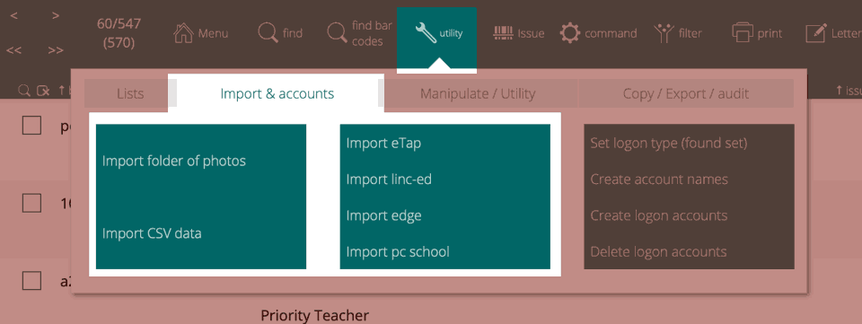
Athenaeum can import generic CSV (comma separated value) files and can also import particular CSV files from a number of common New Zealand based student management systems.
Basic Fields
There are many fields available for borrower information. However, the suggested minimum fields are:
| field | description |
|---|---|
| code | a unique code for that borrower that becomes their bar code (this should be consistent over multiple imports as it is used to marry up to existing borrowers) |
| first name | |
| last name | the family name of the borrower |
| preferred name | (optional) can be used if different to the first name |
| group 1 | in schools, this is usually the "Year" level |
| group 2 | in schools, this is usually the "home room" or "whanau" or "tutor group" (etc.) |
| (optional and helpful) |
Athenaeum also has extra fields available should you choose to use them:
| field | description |
|---|---|
| gender | (optional) useful if analysing issues by gender |
| ethnicity | (optional) |
| custom 1 | |
| custom 2 | |
| custom 3 | |
| custom 4 | |
| contact name first | |
| contact name last | |
| address fields 1 to 4 plus postcode | |
| contact phone number | |
| optional log in account |
Import generic CSV data
Will allow you to import a CSV file into Athenaeum which will then match the data using the bar code and load into the borrower table.
The data required to be imported is relatively minimal.
When you click the import button and choose your file, you are presented with an "import mapping" dialog box. This allows you to align (map) the fields (columns) in the CSV file to the target fields in Athenaeum.
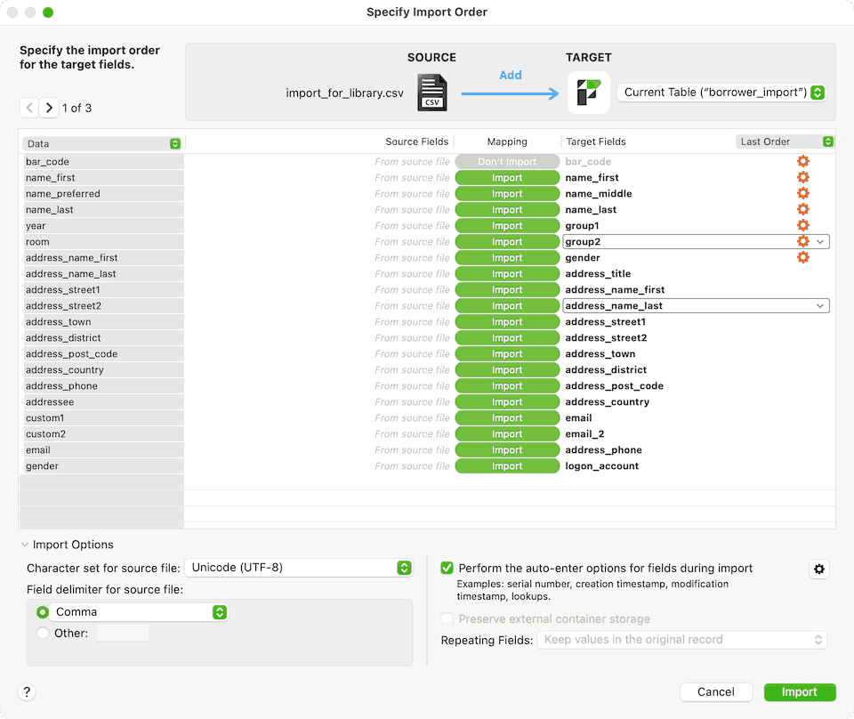
There is quite a lot going on with this window and this flexibility allows us to process different kinds of CSV files.
On the right is the mapping of the import data to the field names in Athenaeum.
At to top, you can choose to "Add" the data - which is the normal action in these scripted import actions.
The bottom of the window contains various options you won't need to change in most cases.
Specifying the field (column) names
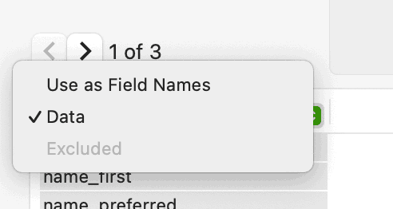
The first row of a csv file usually contains the names of the columns of data to be imported. From the "Data" pop up menu, choose "Field names" and the names of the imported columns moves over to the source fields near the middle of the window.
Aligning the names
Next, Athenaeum needs to be instructed which fields to align your import data.
The common SMS systems will likely have names matched up to Athenaeum's field names and you can use the "matching names" option to help align the fields.
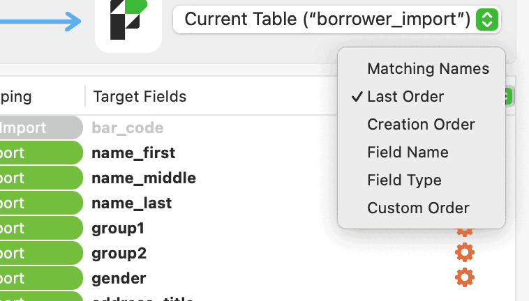
CSV columns that don't exactly match can be aligned manually.
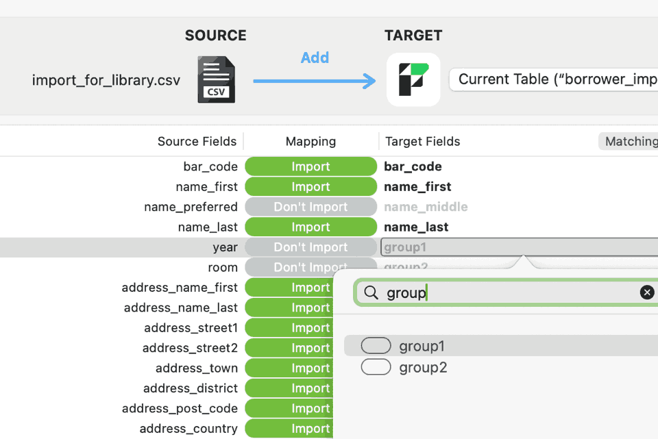
You specify Target fields by clicking in the position of the target and choosing the target field from the list of fields. The list can be filtered by typing part of the name.
Here you can see the bar_code column from the CSV is going to the bar_code field in Athenaeum, the name_first to the like named field. Note in this example, name_preferred is skipped (the dialog still shows the early field name of "name_middle" which is no longer used).
The "year" column does not have an exact equivalent. Athenaeum has "group 1" and "group 2" fields1 so the pop-up list of fields is filtered and "group1" selected.
KAMAR Integration
The KAMAR Student Management System writes data directly to Athenaeum and this feature requires little input from the library (except maybe to swap some fields around depending upon school preferences).
eTap API Integration
Athenaeum can receive from eTap a list of your current students and load them automatically into the borrower list in Athenaeum.
This relieves you of the task of manually entering borrowers with their “year levels” and “rooms” into Athenaeum as well as not having to manually load caregiver details.
How it Works
Each evening your server runs a process that, amongst other things:
-
requests a list of current students with their caregivers from eTap
-
re-arranges that information for loading into Athenaeum
-
updates or adds that borrower information to your Athenaeum
Set up
-
Each school must be authorised by eTap for this process and your Athenaeum configured behind the scenes to allow this to happen.
-
We - at Athenaeum Library Software - set up the feed, check and adjust your bar codes, do the initial import and run through some data checks with you.
-
You then go to Admin->Customisation-Proxy/MARC and set your SMS to eTap, enter your MoE number and specify whether to combine emails:
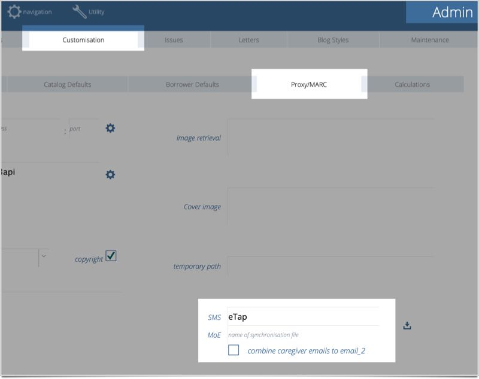
What information comes over?
Athenaeum receives from eTap:
-
student ID
-
the admin_no if used
-
preferred names and formal names of the students currently, the preferred names are the only names used
-
date of birth of the student
-
ethnicity of the student
-
gender of the student
-
year level
-
room (the home room, if you like)
-
caregiver names, phone numbers and addresses
-
an indicator for the primary caregiver
No information is sent from Athenaeum to eTap.
Bar codes
Because the eTap student ID is guaranteed by eTap to be unique, this number is used as the bar code in Athenaeum. This is usually a 4 or 5 digit number.
The “admin number”, which is of the format yy/nnn (2 digit year of entry followed by a / then followed by a number) is deprecated and eTap discourage its continued use. This number is only used when Athenaeum first marries up students in systems that used the admin number format for bar codes and changes the old bar code to the new format.
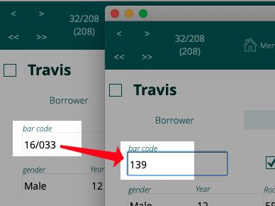
Fields used by eTap
When the data is loaded, eTap uses the following fields:
| field | purpose |
|---|---|
| bar_code | used by eTap to marry up the correct borrower to the student data |
| active flag | only used the first time eTap finds a new borrower |
| gender | |
| year | year level of the student |
| room | home student |
| ethnicity (custom 2) | ethnicity of the student |
| email 1 | email of the primary caregiver (unless a preference is set📌) |
| email 2 | email(s) of the non-primary caregivers |
| additional notes | date updated by eTap, caregiver names and phone numbers, date of birth |
| contact name full | full name of the caregivers (combined) |
| contact first name | first name of the primary caregiver |
| contact last name | last (family) name of the primary caregiver |
| address 1 | address 1 of the _primary_caregiver |
| address 2 | address 2 of the _primary_caregiver |
| address town | town of the _primary_caregiver |
note that the additional notes and contact name full fields are new fields
You should not change the content of these fields, as they will be overwritten each evening and your changes will be lost.
The Primary Caregiver
In eTap, you define a primary caregiver. This person will be the contact in email address 12 and the caregiver details:
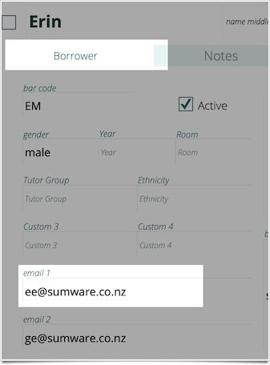
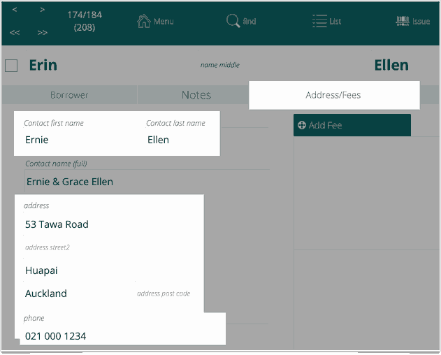
The subsequent caregiver(s) will be listed in email 2 and have their details briefly listed in the additional notes field for your reference.
Preserving email 1 field for student email addresses
Some schools will email students directly. However, you can only do this when one of the email fields are preserved. So to do this, you can go to a new setting in Admin->Customisation-Proxy/MARC and check the “combine emails to email 2” box.
The synchronisation process will now not write to email 1, so anything you enter there (e.g. student email addresses) will not be overwritten each day.
Triggering the synchronisation
When you are set up, there will be nothing for you to do as the process will occur each day after school hours.
However, you can trigger the process manually in admin when “SMS” is set to eTap and your MoE is entered by clicking the import button to the right:
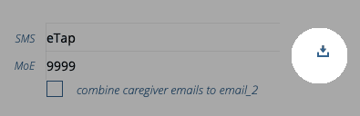
Identifying New Borrowers
When a new student is added to Athenaeum borrower list you will see the words added from eTap dd/mm/yyyy in the additional notes field:
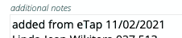
Note that this only appears on the day of update (and is overwritten the next day)
Athenaeum also adds a message to the message tab briefly listing new borrowers.
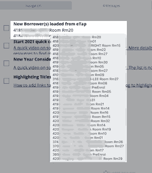
In an unsorted list of borrowers, the new borrowers are always at the end.
Identifying “Left” borrowers
Because we only receive a list of current students from eTap, we have to make an assumption about students who have left the school.
That is, if a borrower is not in the feed, they are either:
-
a student who has left
-
a staff member
-
a class set
Now, because eTap “owns” the field called additional notes, etap will overwrite it every night…so don’t enter any text into this field because you will lose it.
So what the eTap import process does, before importing, is mark every borrower in Athenaeum (left/staff/class sets/etc.) with “not updated by eTap”.
After the import, you can simply find students who have “not updated by eTap” in the additional notes field and make a judgement call on whether they have left and need to be deactivated or whether there was an issue with the feed.
you can simply ignore the note in the staff records.
Miscellaneous
-
you can add a new token for use in letters to extract the “caregiver full name” field (this is not loaded by default and only needs to be loaded once)
-
the additional notes field is not searched by default when using the quick search box at the top of the borrower list
-
any mistakes made by adminstration in email (e.g. spelling mistakes) will be shared with Athenaeum. The only way to fix these is to have the mistakes corrected in eTap. Mistakes happen! So do corrections 🤓.
-
if there are no primary caregivers specified in eTap, then caregiver details will be combined into email 2 and the additional notes field
-
sometimes, the data just isn't exactly the way you want it - however it is consistently not the way you want it! This is what you sometimes give up for automation!